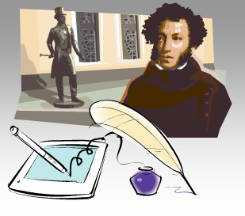

 |
− Привет, Катя! − Здравствуй, Асель! − Что получила за сочинение? − Пятерку! − А какая была тема? − "Солнце русской поэзии". − О ком же эта тема? − Об Александре Сергеевиче Пушкине. − Ты, наверное, знаешь много его стихотворений? − Да, мы в гуманитарном классе учим много стихов. − А тебе не кажется, что Пушкин уже не современен? Есть столько других поэтов… ... |